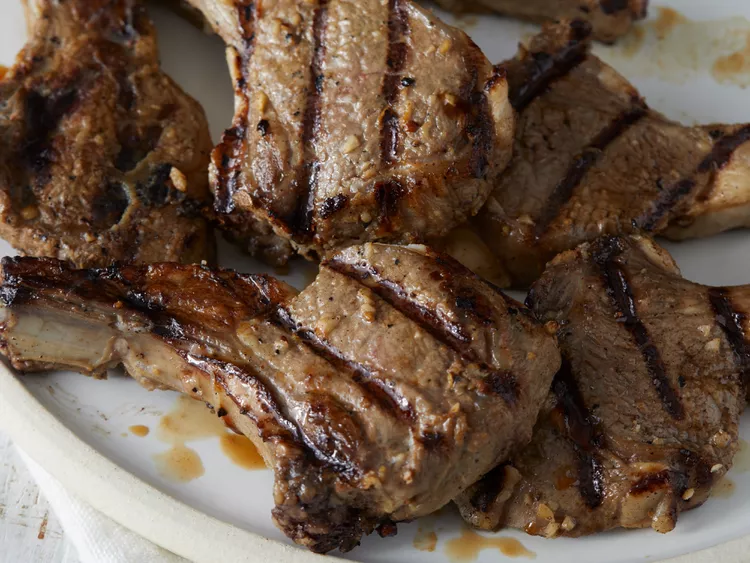

Lamb

Simple Grilled Lamb Chops
These grilled lamb chops are easy to prepare with a tasty garlicky marinade for flavorsome, juicy results.
Tender, juicy, and super flavorful grilled lamb chops are easier to make than you think.
Ingredients
- 1 onion, thinly sliced
- ¼ cup distilled white vinegar
- 2 tablespoons olive oil
- 1 tablespoon minced garlic
- 2 teaspoons salt
- ½ teaspoon black pepper
- 6 (6 ounce) lamb chops
Steps
- Mix together onion, vinegar, oil, garlic, salt, and pepper in a large resealable bag. Add lamb, seal bag, and toss to coat. Marinate in the refrigerator for 2 hours.
- Preheat an outdoor grill for medium-high heat.
- Remove lamb from marinade and leave any onions on that stick to meat; discard marinade. Wrap exposed ends of bones with aluminum foil to keep them from burning.
- Cook on the preheated grill to desired doneness, about 3 minutes per side for medium. An instant-read thermometer inserted into the center should read at least 130 degrees F (54 degrees C).
- Serve hot and enjoy!